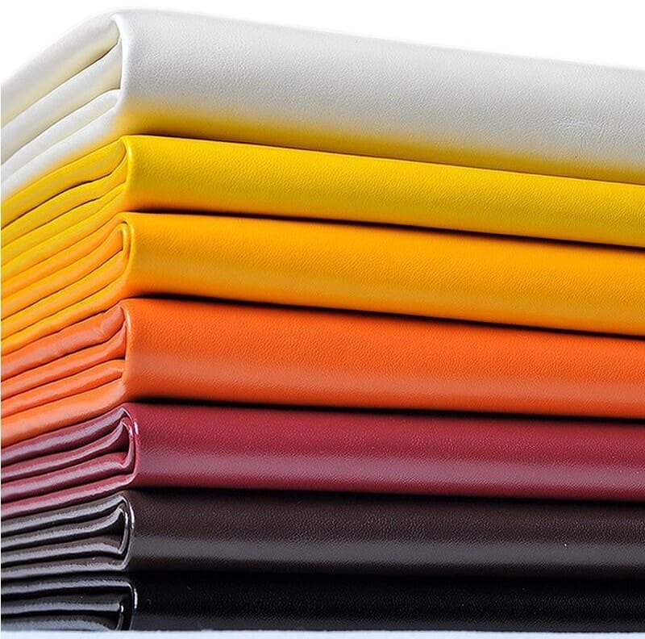

DESCRIPCIÓN: Tela impermeable, semi-opaca, gruesa y de fácil lavado.
El reverso posee felpa.
USOS: Ideal para decorar jardines, la cocina, almohadones, manteles e individuales, tapizados de sillitas
de bebe, cochecitos de paseo, forro de cuadernos y capetas, sillas, sillones, sofás, taburetes, bancos,
bolsos, sillas de playa, reposeras y accesorios para camping.

Friselina
DESCRIPCIÓN: Tela con textura, semi-opaca y semi-gruesa.
USOS: Ideal para banderas, decoracion de eventos, manteles, bolsas, fundas, filtros para laboratorio, ropa
quirurgica, baberos odontologicos, disfraces y manualidades.
Friza
DESCRIPCIÓN: Tela lisa y suave al tacto, buen acabado, sin brillo, gruesa, cálida, cómoda, de fácil lavado
y resistente al uso.
USOS: Ideal para abrigos, buzos, pantalones, conjuntos y uniformes.
Lienzo
DESCRIPCIÓN: Tejido Plano en Algodón 100%. El lienzo es una tela
rústica, sin brillo y semi-gruesa. Combina perfecto con las
Gasas de Algodón por su paleta de color y composicón. Lienzo
20-20; 20 pasadas. Buen grosor.
USOS: Ideal para Almohadones, Cortinas, Manteles, Funda de
Acolchados, Fundas de Sillón, disfraces, manualidades y forros.
Toalla
DESCRIPCIÓN: Tela con textura, semi-opaca, gruesa, cálida,
cómoda, fácil lavado, resistente al uso y espojosa.
USOS: Ideal para babitas, baberos, batas de natación, toallas y
toallones, accesorios para baños y playa.